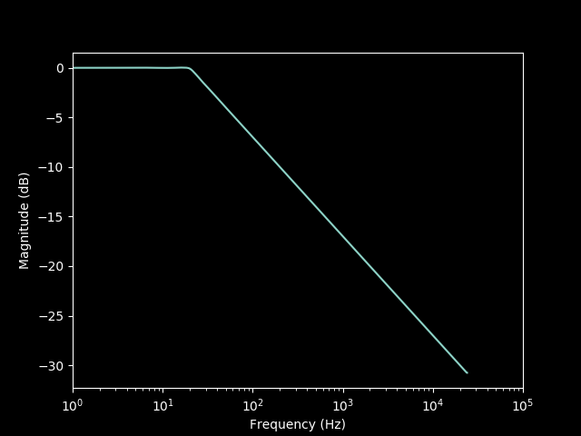

This example shows how to apply a filter to an audio file using the Gaborator library, by turning the audio into spectrogram coefficients, modifying the coefficients, and resynthesizing audio from them.
The specific filter implemented here is a 3 dB/octave lowpass filter. This is sometimes called a pinking filter because it can be used to produce pink noise from white noise. In practice, the 3 dB/octave slope is only applied above some minimum frequency, for example 20 Hz, because otherwise the gain of the filter would approach infinity as the frequency approaches 0, and the impulse response would have to be infinitely wide.
Since the slope of this filter is not a multiple of 6 dB/octave, it is difficult to implement as an analog filter, but by filtering digitally in the frequency domain, arbitrary filter responses such as this can easily be achieved.
#include <memory.h>
#include <iostream>
#include <sndfile.h>
#include <gaborator/gaborator.h>
int main(int argc, char **argv) {
if (argc < 3) {
std::cerr << "usage: filter input.wav output.wav\n";
exit(1);
}
The code for reading the input audio file is identical to that in Example 1:
SF_INFO sfinfo;
memset(&sfinfo, 0, sizeof(sfinfo));
SNDFILE *sf_in = sf_open(argv[1], SFM_READ, &sfinfo);
if (! sf_in) {
std::cerr << "could not open input audio file: "
<< sf_strerror(sf_in) << "\n";
exit(1);
}
double fs = sfinfo.samplerate;
sf_count_t n_frames = sfinfo.frames;
sf_count_t n_samples = sfinfo.frames * sfinfo.channels;
std::vector<float> audio(n_samples);
sf_count_t n_read = sf_readf_float(sf_in, audio.data(), n_frames);
if (n_read != n_frames) {
std::cerr << "read error\n";
exit(1);
}
sf_close(sf_in);
The spectrum analysis works much the same as in Example 1, but uses slightly different parameters. We use a larger number of frequency bands per octave (100) to minimize ripple in the frequency response, and the reference frequency argument is omitted as we don't care about the exact alignment of the bands with respect to a musical scale.
gaborator::parameters params(100, 20.0 / fs);
gaborator::analyzer<float> analyzer(params);
The filtering will be done by multiplying each spectrogram
coefficient with a frequency-dependent gain. To avoid having to
calculate the gain on the fly for each coefficient, which would
be slow, we will precalculate the gains into a vector band_gains
of one gain value per band, including one for the
special lowpass band that contains the frequencies from 0 to 20 Hz.
std::vector<float> band_gains(analyzer.bands_end());
First, we calculate the gains for the bandpass bands.
For a 3 dB/octave lowpass filter, the voltage gain needs to be
proportional to the square root of the inverse of the frequency.
To get the frequency of each band, we call the
analyzer method band_ff(), which
returns the center frequency of the band in units of the
sampling frequency. The gain is normalized to unity at 20 Hz.
for (int band = analyzer.bandpass_bands_begin(); band < analyzer.bandpass_bands_end(); band++) {
float f_hz = analyzer.band_ff(band) * fs;
band_gains[band] = 1.0 / sqrt(f_hz / 20.0);
}
The gain of the lowpass band is set to the the same value as the lowest-frequency bandpass band, so that the overall filter gain plateaus smoothly to a constant value below 20 Hz.
band_gains[analyzer.band_lowpass()] = band_gains[analyzer.bandpass_bands_end() - 1];
To handle stereo and other multi-channel audio files,
we will loop over the channels and filter each channel separately.
Since libsndfile produces interleaved samples, we first
de-interleave the current channel into a temporary vector called
channel:
for (sf_count_t ch = 0; ch < sfinfo.channels; ch++) {
std::vector<float> channel(n_frames);
for (sf_count_t i = 0; i < n_frames; i++)
channel[i] = audio[i * sfinfo.channels + ch];
Now we can spectrum analyze the current channel, producing a set of coefficients:
gaborator::coefs<float> coefs(analyzer);
analyzer.analyze(channel.data(), 0, channel.size(), coefs);
The filtering is done using the function
process(), which applies a user-defined function
to each spectrogram coefficient. Here, that user-defined function is a
lambda expression that multiplies the coefficient by the appropriate
precalculated frequency-dependent gain, modifying the coefficient in
place. The unused int64_t argument is the time in units
of samples; this could be use to implement a time-varying filter if
desired.
The second and third argument to process() specify a
range of frequency bands to process; here we pass INT_MIN,
INT_MAX to process all of them. Similarly, the fourth and
fifth argument specify a time range to process, and we pass
INT64_MIN, INT64_MAX to process all the coefficients
in coefs regardless of time.
process([&](int band, int64_t, std::complex<float> &coef) {
coef *= band_gains[band];
},
INT_MIN, INT_MAX,
INT64_MIN, INT64_MAX,
coefs);
We can now resynthesize audio from the filtered coefficients by
calling synthesize(). This is a mirror image of the call to
analyze(): now the coefficients are the input, and
the buffer of samples is the output. The channel
vector that originally contained the input samples for the channel
is now reused to hold the output samples.
analyzer.synthesize(coefs, 0, channel.size(), channel.data());
The audio vector that contained the
original interleaved audio is reused for the interleaved
filtered audio. This concludes the loop over the channels.
for (sf_count_t i = 0; i < n_frames; i++)
audio[i * sfinfo.channels + ch] = channel[i];
}
The filtered audio is written using libsndfile,
using code that closely mirrors that for reading.
Note that we use SFC_SET_CLIPPING
to make sure that any samples too loud for the file format
will saturate; by default, libsndfile makes them
wrap around, which sounds really bad.
SNDFILE *sf_out = sf_open(argv[2], SFM_WRITE, &sfinfo);
if (! sf_out) {
std::cerr << "could not open output audio file: "
<< sf_strerror(sf_out) << "\n";
exit(1);
}
sf_command(sf_out, SFC_SET_CLIPPING, NULL, SF_TRUE);
sf_count_t n_written = sf_writef_float(sf_out, audio.data(), n_frames);
if (n_written != n_frames) {
std::cerr << "write error\n";
exit(1);
}
sf_close(sf_out);
We need a couple more lines of boilerplate to make the example a complete program:
return 0;
}
Like Example 1, this example can be built using a one-line build command:
c++ -std=c++11 -I.. -O3 -ffast-math `pkg-config --cflags sndfile` filter.cc `pkg-config --libs sndfile` -o filter
Or using the vDSP FFT on macOS:
c++ -std=c++11 -I.. -O3 -ffast-math -DGABORATOR_USE_VDSP `pkg-config --cflags sndfile` filter.cc `pkg-config --libs sndfile` -framework Accelerate -o filter
Or using PFFFT (see Example 1 for how to download and build PFFFT):
c++ -std=c++11 -I.. -Ipffft -O3 -ffast-math -DGABORATOR_USE_PFFFT `pkg-config --cflags sndfile` filter.cc pffft/pffft.o pffft/fftpack.o `pkg-config --libs sndfile` -o filter
To filter the file guitar.wav that was downloaded in
Example 1, simply run
./filter guitar.wav guitar_filtered.wav
The resulting lowpass filtered audio in guitar_filtered.wav will
sound muffled compared to the original, but less so than it would with a
6 dB/octave filter.
The following plot shows the actual measured frequency response of the filter, with the expected 3 dB/octave slope above 20 Hz and minimal ripple:
